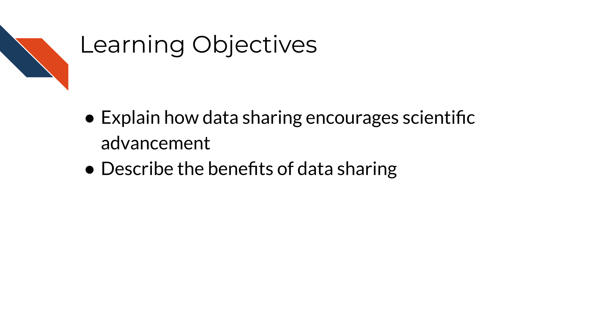
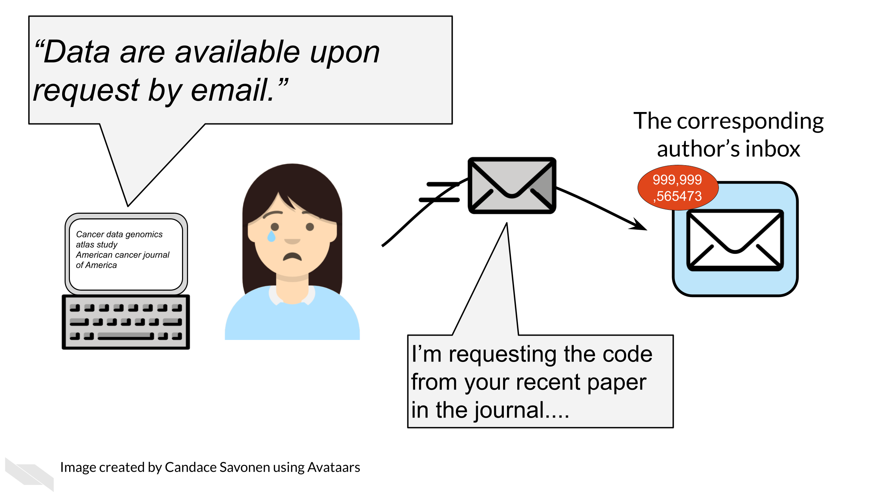

Chapter 2 Data Sharing is Important
In this section we will cover the following learning objectives:

Sharing data is critical for optimizing the advancement of scientific understanding. Now that labs all over the world are producing massive amounts of data, there are many discoveries that can be made by simply re-using/re-analyzing this existing data.
The concept of data re-use is so important, that in January 2023, after years of development, the NIH released new guidance and began requiring new practices for data management and sharing. See the announcement here.
See this course about the NIH policy for more information about how to comply.
Note that many institutes and funding agencies or mechanisms have requirements about how your data can be shared. Typically, data sharing of protected data also requires Institutional Review Board (IRB) approval before the study is conducted. Ensure that you are following those requirements before you share your data. A later section in this course will cover data privacy.
There’s so many excellent reasons to put your data in a repository, whether or not a journal requires it:
Sharing your data…
- Makes your project more transparent and thus more likely to be trusted and cited. In fact, one study found that articles with links to the data used (in a repository) were cited more than articles without such information or other forms of data sharing (Colavizza et al. 2020).

- Helps reduce your own workload so your email inbox isn’t overloaded by requests you probably don’t have time to respond to.

- Allows others to gain even more insights from your data which shows funders that your data will be used to its maximum potential.

In summary, data sharing is the practice of making all appropriate data sources associated with a project available through systematic means. Broad data sharing is a critical step toward mitigating the reproducibility and replicability crisis. Not only that, but data sharing is economical, equitable, and frugal. New exciting findings can result from shared and reused data. Additionally, institutions and individuals with less resource availability can benefit from access to shared data.